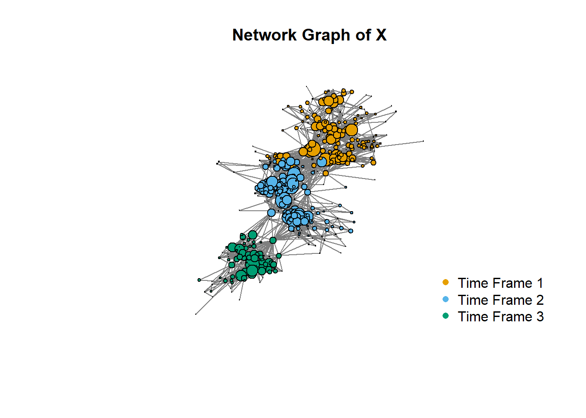
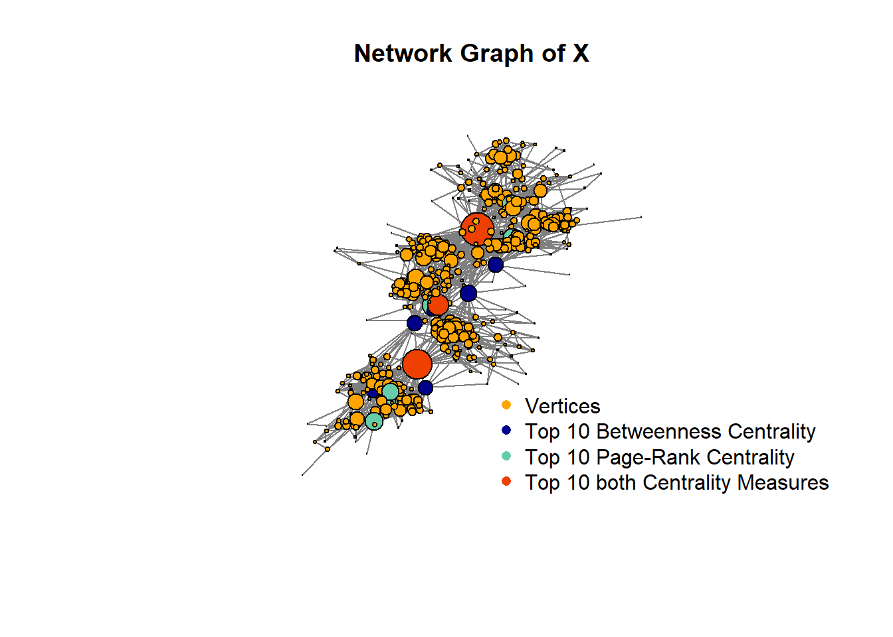
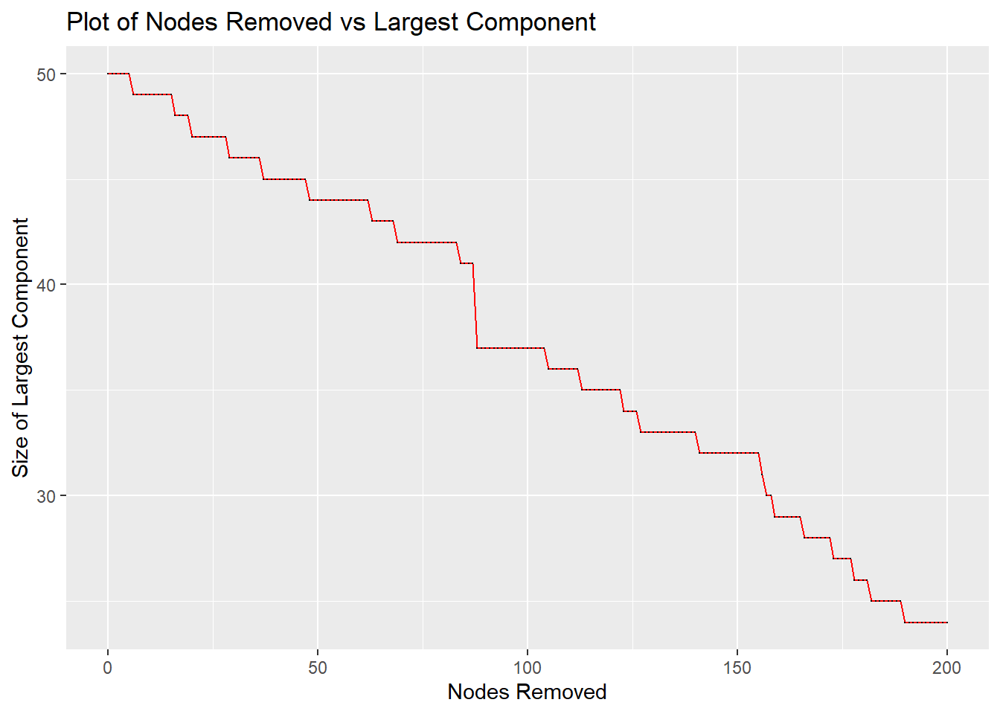
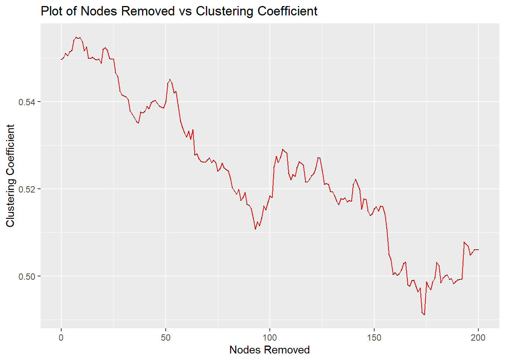
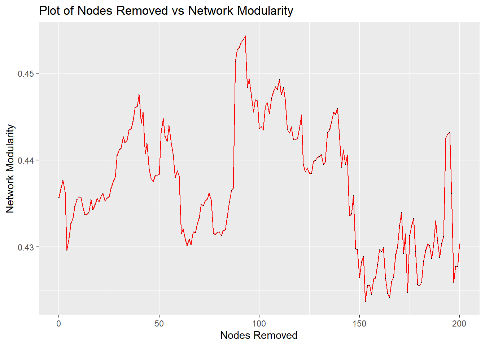

What is network analysis???
Code
# Initial packages loaded
# Tidyverse loaded to facilitate manipulation of outputs
library(knitr)
library(igraph)
library(dplyr)
library(scales)
library(ggplot2)
library(tidyverse)# Loading the dataset
dataset <- load(file.path(path, "dataset.RData"))
# Converting the data to graphs in igraph format
x_graph <- graph.adjacency(X, mode="undirected")
y_graph <- graph.adjacency(Y, mode="undirected", weighted=TRUE)Question 01: Network Degrees
Having imported the graph, the degrees were calculated using the degree and strength function for the graphs derived from the X and Y adjacency matrices.
As Y is an interaction matrix, it corresponds to a weighted network and the strength function is used to calculate the degree of the nodes.
# Calculating the degrees
deg_x <- degree(x_graph) # calculating the degrees
deg_y <- strength(y_graph)
# Determining the top 5 degrees
deg_x_top5 <- head(sort(deg_x, decreasing=TRUE),5)
deg_y_top5 <- head(sort(deg_y, decreasing=TRUE),5)
# Five nodes with highest degree
vex_deg_top5 <- V(x_graph)[match(deg_x_top5, deg_x)]
# Weighted degrees of five nodes with highest degree
vex_top5_wgt_deg <- deg_y[match(deg_x_top5, deg_x)]5 Nodes with Highest Binary Degree: 51, 272, 195, 195, 161
Weighted degree of the 5 Nodes with Highest Binary Degree: 267, 123, 294, 294, 146
Question 02: Network Visualisation
The following plot provides a visual representation of the network X where the size of the nodes is proportional to the weighted degree, and the coordinates are coloured according to time_frame.
plot(x_graph,
layout = layout,
edge.size = 1,
edge.color="grey50",
vertex.label=NA,
vertex.size = 15 * rescale(deg_y, to=c(0,1)), # using a value of 20 and rescaling the vertex sizes
vertex.color = time_frame,
main="Network Graph of X")
legend("bottomright", legend=c("Time Frame 1", "Time Frame 2", "Time Frame 3"),
col=categorical_pal(8), pch=16, cex=1, bty="n")
Question 05: Centrality Measures
# Page Rank Centrality
x_page_rank <- page_rank(x_graph)$vector # Page-Rank centrality
x_page_rank_top5 <- V(x_graph)[order(x_page_rank, decreasing = T)[1:5]]
# Betweenness Centrality
x_between_centr <- centr_betw(x_graph)$res # betweenness centrality
x_between_centr_top5 <- V(x_graph)[order(x_between_centr,decreasing = T)[1:5]]- Page Rank Centrality - Top 5 Scores: 0.0087931, 0.0079697, 0.0058721, 0.0057151, 0.0057093
- Page Rank Centrality - Top 5 Nodes: 51, 272, 235, 50, 195
- Betweenness Centrality - Top 5 Scores: 2.213394210^{4}, 1.683789110^{4}, 1.66315810^{4}, 9587.8048114, 6263.4480562
- Betweenness Centrality - Top 5 Nodes: 188, 272, 51, 230, 50
The following plot illustrates the network with node sizes proportional to Page-Rank and highlights with a different colour the nodes that are in the top 10 according to both centralities.
# getting top 10 betweenness centrality indices
x_bc_index <- order(x_between_centr, decreasing = T)[1:10]
# getting top 10 page-rank centrality indices
x_pr_index <- order(x_page_rank, decreasing = T)[1:10]
# getting the list of indices which overlap
x_cc_index <- intersect(x_bc_index, x_pr_index)
# Assigning colors for the igraph object
V(x_graph)$color = "orange"
V(x_graph)[x_bc_index]$color = "blue4"
V(x_graph)[x_pr_index]$color = "aquamarine3"
V(x_graph)[x_cc_index]$color = "orangered2"
plot(x_graph,
layout = layout,
edge.size = 1,
edge.color="grey50",
vertex.label = NA,
vertex.size = 20 * rescale(x_page_rank, c(0,1)),
main="Network Graph of X")
legend("bottomright", legend=c("Vertices", "Top 10 Betweenness Centrality", "Top 10 Page-Rank Centrality", "Top 10 both Centrality Measures"),
col=c("orange","blue4", "aquamarine3", "orangered2"),
pch= 16,
cex=1, bty="n")
We note that there are 4 nodes for which the Page-Rank Centrality and the Betweenness Centrality intersect. Of these
- 2 are in time step 1
- 1 is in time step 2
- 1 is in time step 3
Question 09: Simulation Study I
set.seed(1)
n_nodes_to_remove <- 200 # number of nodes that we are removing from the network
# creates a vector with the index names for the nodes that will be removed
vertice_index <- sample(V(x_graph), n_nodes_to_remove, replace=FALSE)
# this tibble store the output following the removal of each node
store_graph_metrics<- tibble(nodes_removed = 0:200,
largest_component = NA,
clustering_coefficient = NA,
modularity= NA)
for(i in 0:n_nodes_to_remove){
# Stores the network metrics before any nodes are removed
if(i==0){
store_graph_metrics$largest_component[i+1] <- max(degree(x_graph))
store_graph_metrics$clustering_coefficient[i+1] <- modularity(x_graph, time_frame)
store_graph_metrics$modularity[i+1] <- transitivity(x_graph)
}
else{
# Stores the network and memberships as we gradually remove nodes
time_frame_temp <- time_frame[-vertice_index[1:i]]
x_graph_temp <- igraph::delete.vertices(x_graph, vertice_index[1:i])
# Writes the metrics to the tibble
store_graph_metrics$largest_component[i+1] <- max(degree(x_graph_temp))
store_graph_metrics$clustering_coefficient[i+1] <- modularity(x_graph_temp, time_frame_temp)
store_graph_metrics$modularity[i+1] <- transitivity(x_graph_temp)
}
}
# Defining a function to plot the output
plot_sim <- function(data, var, xlabel, title){
ggplot(data=data, aes(x=nodes_removed, y=var)) +
geom_line(color="red") +
geom_point(size = 0.1) +
xlab("Nodes Removed") +
ylab(xlabel) +
ggtitle(title)
}
# Plotting the output
plot_sim(store_graph_metrics,
store_graph_metrics$largest_component,
"Size of Largest Component",
"Plot of Nodes Removed vs Largest Component")
plot_sim(store_graph_metrics,
store_graph_metrics$clustering_coefficient,
"Clustering Coefficient",
"Plot of Nodes Removed vs Clustering Coefficient")
plot_sim(store_graph_metrics,
store_graph_metrics$modularity,
"Network Modularity",
"Plot of Nodes Removed vs Network Modularity")
Examining the plots, we note the following:
- Largest Component: This metric decreases as nodes are gradually removed from the network.
- Clustering Coefficient: This metric also decreases as nodes are gradually removed from the network. This behaviour is as expected, given the network contains a small number of highly connected nodes. However the trend is not strictly downwards, with some increases in the coefficient noted. As the clustering coefficient is a function of the nodes in the network and nodes are removed from the network at random it is not unexpected that this value can increase as nodes are removed.
- Network Modularity: The modularity is a measure of how clustered the network is. As nodes are removed at random, this measure both increases and decreases and does not strictly decrease.